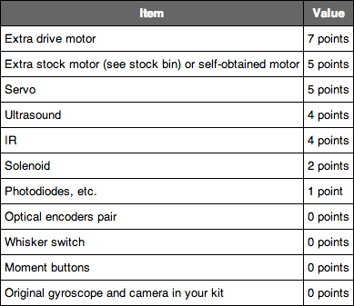

MASLAB 2013 Rules
Contents
1. Robot2. Field Specifications
3. Competition Rules
4. Kit Contents
5. Schedule for Class (also see Calendar)
MASLAB Rules PDF: Download
1. Robot
Robots can have a footprint no larger than 14x14 inches. Height is not restricted, but keep in mind that your team is responsible for housing your robot outside of lab hours. Therefore you will be carrying your robot around (likely in your team tub) and an excessively tall robot will be hard to handle.
Robots must not use any power sources except those provided by or approved by Maslab.
Robots must be able to boot unattended and run your robot from a button press without network access.
Robots may only use one camera (unless you are planning on using stereo vision, in which case you should discuss your plans with staff).
Robots must not consume more than 50 sensor points. Sensor points can be deducted from your team for bad behavior, such as failure to clean up.
2. Field Specifications
All walls are 6 in high with a ~1 in blue strip along the top.
The wall between the sides is yellow. You must score over the yellow section of the wall if scoring over the wall.
The walls comprising the scoring box are brown, orange, and purple. All other walls are white. Balls will be red or green depending on which side.
The scoring tower will be at least 16 inches from the yellow wall at its closest point. The three scoring areas in the scoring tower will be 24 inches, 15 inches, and 6 inches square. The heights of these areas will be 6 inches, 10 inches, and 14 inches respectively.
All corridors will be at least 16 inches wide.
Walls will not meet at less than a 90 degree angle.

3. Competition Rules
Balls are green or red depending on side. Each side starts with 8 balls per side.
Four balls are released on each side each time any robot presses the green button. Up to 16 balls can be released onto each side by pressing the green button.
200 points are awarded for any robot that maintains a cleared field by the end of the three-minute play period. This means you must clear all balls of both color through scoring or posession
Scoring with opponent’s color balls do not count toward your score
4. Kit Contents
- Logitech B910 Webcam
- Acer Aspire One A0722 Laptop Computer with Ubuntu 12.10 (Quantal Quetzal)
- 1 swivel caster
- Motor kit
- 2 gear head motors
- 2 hex bore wheel mounts (with locking ring)
- 2 wheels
- 2 motor mounts
- Battery connection kit
- 2 fuse holders
- 2 female battery disconnects
- 1 4A 125V fuses
- 1 male-female header, for connecting the battery to the arduino
- 1 12"x12" pegboard
- 2 12"x24" acrylic sheets
- 1 12V lead acid battery
- 1 12V lead acid battery charger
- 1 Arduino Mega2560
5. Schedule for Class (also see Calendar)
Monday, January 7: 10am-12pm, 37-212, Class; 1pm-3pm, 37-212, ClassTuesday, January 8: 10am-12pm, 37-212, Class; 1pm-3pm, 37-212, Class
Wednesday, January 9: 10am-12pm, 37-212, Class; 1pm-3pm, 37-212, Class
Thursday, January 10: 10am-12pm, 37-212, Class; 1pm-3pm, 37-212, Class
Friday, January 11: 10am-12pm, 37-212, Class
Monday, January 14: Mock Competition 1, 26-100, 12pm
Friday, January 18: Mock Competition 2, 26-100, 12pm
Tuesday, January 22: Resumes due to staff by 8pm
Wednesday, January 23: Sponsor Dinner, Grier Room (38-4), 5pm
Thursday, January 24: Mock Competition 3, 26-100, 12pm
Tuesday, January 29: Seeding, 26-100, 12pm
Thursday, January 31: Robots impounded by 8pm
Friday, February 1: Final Competition, 26-100, All Day
If you have any questions, please contact us at maslab@mit.edu.